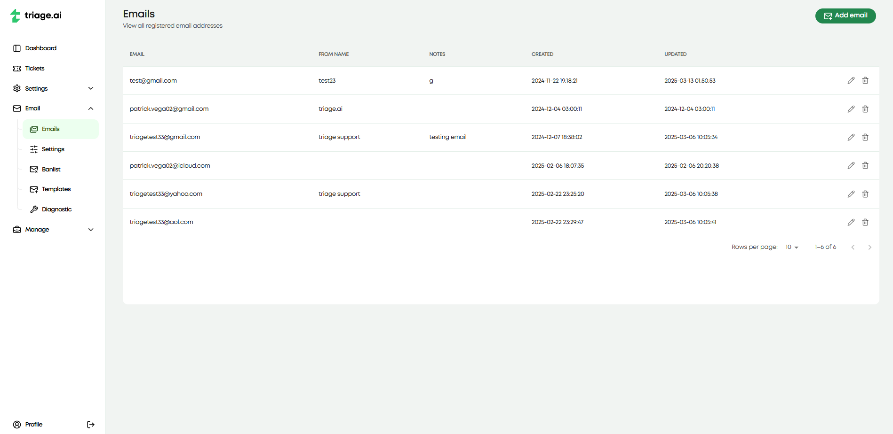
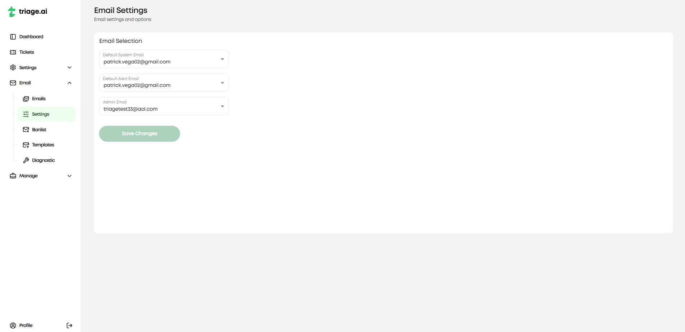
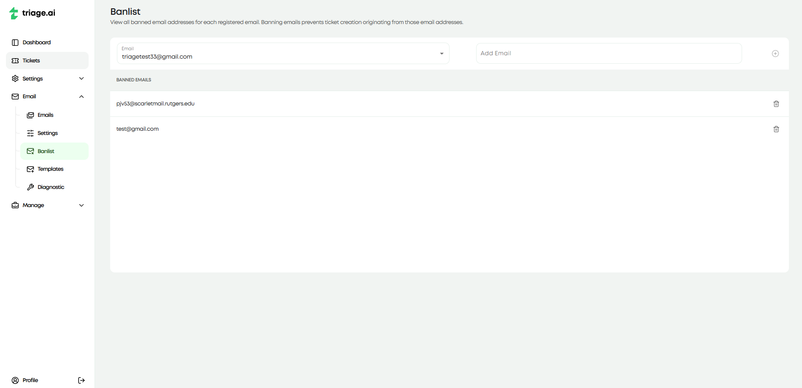
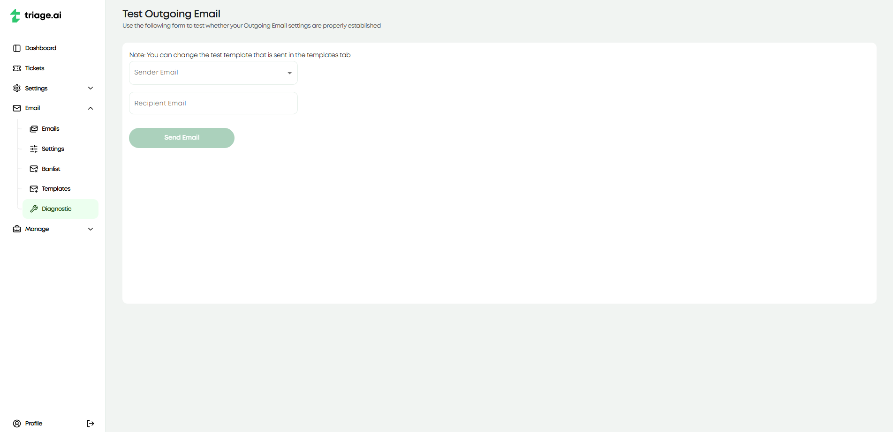

Email Guide
For a guide on configuring emails in triage.ai and what everything means in the email create/edit page, refer to Email Settings. Also, head to Email Templates for more details on templates.
Email Settings
triage.ai allows you to specify which registered emails will handle system and alert emails. The system email is responsible for delivering emails on account-related concerns. This will cover situations like password resets, email confirmations, account creation, and complete user registration. The alert email is responsible for sending out ticket-related notifications. Based on the email templates created and active, email alerts will be sent out to the specified party on whatever ticket event has occurred. The admin email can also be configured here, but this does not affect the system and is more for reference purposes.
Email Banlist
Along with offering IMAP services for incoming emails, triage.ai also offers a ban list for emails. This list of emails will not have their incoming emails turned into tickets. This is useful if your email expects more than potential support tickets, and you don’t want to clutter your ticket list with non-support emails. Emails can be added to the ban list by going to the ban list tab under emails and adding emails you’d like to ban for the specified configured email. It is also suggested that you add any no-reply emails from your email provider to avoid cluttering your ticket list with automated emails.
Diagnostic
After configuring any email, you should go to the diagnostic tab and test that email to ensure the credentials and SMTP server are working correctly. This will send a test email from the configured email to another email of your choice so you can see that the SMTP server is working correctly and that an email was sent. The site will alert you if the credentials are incorrect and advise you to check the email to ensure everything is correct. While we can guarantee the email was sent from our end if the credentials are correct, we cannot guarantee the email was received on the other end, as that is out of our control. You will need to ensure the email receiving this email is valid and can receive emails.
